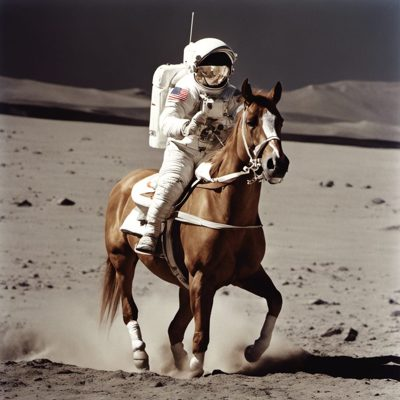

Artificial Intelligence
Instead of telling a computer every rule, we let it learn patterns from examples. This floor is the long, slow climb of that idea — from a hopeful 1956 workshop to 2012's breakthrough, to the 2017 Transformer that turned AI from a research field into the technology reshaping the whole tower.
🧠 What this floor is
Most software follows rules a human wrote. Machine learning flips that: show a system thousands of examples and let it find the rules itself. A neural network — loosely inspired by brain cells — is the main tool, a web of simple numeric units whose connections are tuned by training until the whole thing makes good predictions. This floor is special: it doesn't sit quietly above the others. After 2017 it began reaching down and reshaping every floor beneath it.
The big ideas
From simple logic gates to neural networks that learn from data.
🎓 1. Learning from examples (machine learning)
Rather than coding "what a cat looks like," you show a network thousands of labelled photos and let it find the patterns itself.
A neural network is made of thousands of tiny math units called neurons. Think of a single neuron as a weighted voting system: \[ y = \sigma(w_1 x_1 + w_2 x_2 + \dots + w_n x_n + b) \] where each input ($x$) is a piece of advice from a friend, the weight ($w$) is how much you trust that friend, and the bias ($b$) is how stubborn you are. The activation function ($\sigma$), like **ReLU** (Rectified Linear Unit), acts as a simple switch: \[ f(x) = \max(0, x) \] If the total vote is positive, the neuron fires the output; if it is negative, it stays silent (0). If we didn't have this non-linear switch, a network with 100 layers would collapse into a single flat equation, unable to learn anything complex!
To train this network, we use **Backpropagation** (backward error propagation). Imagine a giant wall of millions of dimmer dials connected by wires. You feed in an image of a cat; the dials turn, and a bulb at the end turns on. If the bulb marked "Dog" lights up instead of "Cat," the computer goes backward through the layers, calculating the gradient of the error, and nudges each dial a tiny bit so the next guess is slightly closer to the correct answer.
A photos app that quietly groups every picture of the same person was never told what that person looks like. It learned the pattern from examples — that is machine learning doing its everyday job.
Neural networks translate complex human tasks into high-dimensional grid math (Floor 1). In the 1950s, Frank Rosenblatt implemented this math physically as the Mark I Perceptron (Floor 2)—a room-sized cabinet using real motorized dials to adjust weights.
🖼️ 2. The breakthrough that proved it (AlexNet, 2012)
For decades, neural networks underperformed. Then on 30 September 2012, AlexNetA deep neural network by Alex Krizhevsky, Ilya Sutskever and Geoffrey Hinton. It won the 2012 ImageNet contest with a top-5 error rate of 15.3%, far ahead of the runner-up, by training on GPUs. — built by Krizhevsky, Sutskever and Hinton — crushed the ImageNet image-recognition contest with a top-5 error rate of 15.3%, far ahead of everyone else. Crucially, it was trained on GPUs. This was the first loud proof that deep learning plus parallel hardware worked — a preview of the 2017 cascade.
Neural networks were an old, underperforming idea — they lacked two things: enough labelled examples, and enough cheap parallel compute to train on.
The ImageNet dataset plus GPUs (via CUDA) finally supplied both. AlexNet proved deep learning worked — and lit the fuse for everything after.
AlexNet proved that deep learning (Floor 6) could scale by shifting the grid math from slow CPUs to parallel GPUs (Floor 2) using NVIDIA's CUDA programming layer (Floor 3).


⚡ 3. The Transformer and Large Language Models (2017 →)
In 2017, Google's "Attention Is All You Need" introduced the TransformerThe 2017 neural-network architecture based on self-attention. It processes a whole sequence in parallel and is the basis of every modern large language model..
By reading a whole sequence at once with **attention** instead of one step at a time, it could be trained on massive datasets. Scaled up, Transformers became **Large Language Models** (LLMs) like ChatGPT, Claude, and Gemini.
To understand which word belongs to what context, the Transformer uses **Self-Attention** by projecting words into three vectors:
- 🔍 Query ($\mathbf{Q}$): What a word is looking for (e.g., "I am looking for words that describe my bank").
- 🔑 Key ($\mathbf{K}$): What a word offers as a description (e.g., "I am the word 'river', I offer a nature context").
- 💎 Value ($\mathbf{V}$): The actual information of the word.
The model multiplies the Query and Key to find their matching score, divides by a scaling factor to keep the math stable, and applies a softmax function to get the attention weights: \[ \text{Attention}(\mathbf{Q}, \mathbf{K}, \mathbf{V}) = \text{softmax}\left(\frac{\mathbf{Q}\mathbf{K}^T}{\sqrt{d_k}}\right)\mathbf{V} \] This acts like a context magnet: in "the bank of the river," the Key of "river" pulls the Query of "bank" closer, selecting the correct geographical meaning (Value) instead of a financial one.
The 2017 idea was born on Floor 1 (mathematics) and made practical by Floor 2 (GPUs), Floor 3–4 (systems and networks) and Floor 5 (data). All of it converges here, on Floor 6 — which is why AI feels like it arrived all at once. It is the visible tip of a change that runs all the way down. See the full cascade →
The older networks (RNNs) read a sentence one word at a time — slow to train and forgetful over long passages. Machine-translation researchers needed a model that could weigh all the words together.
Self-attention — read the whole sequence at once, in parallel, and learn which words matter to each other. Because that's just parallel linear algebra, it ran beautifully on GPUs and could be scaled enormously. This is the Floor-1 change that became the cascade.
Large language models (Floor 6) are trained across thousands of servers wired by high-speed networks (Floor 4) running Linux kernels (Floor 3). The models are then packaged into software libraries (Floor 5) to power conversational chat apps (Floor 7).



How does a computer understand which word is which? It draws links (attention scores) between words:
- 🌊 "The bank of the **river** was muddy." → The model connects **bank** directly to **river** (thick link).
- 💰 "The bank held the **money** safely." → The model connects **bank** directly to **money** (thick link).
By drawing these links across every word in a sentence at once, the Transformer understands the context of the whole message.
How this floor evolved
From rules-based expert systems to parallel models that generate and reason.
Hand-built rules
Early AI tried to encode human knowledge as explicit rules. It could play set games but couldn't learn or handle the messy real world.
Models that write, see and speak
Large language and vision models write, translate, generate images and hold conversations — trained on a large fraction of the internet.
Agents that act
AI that doesn't just answer but takes multi-step actions — using tools, writing and running code, and carrying out tasks on your behalf.
The Dartmouth workshop coins the term "artificial intelligence" and launches it as a research field.

An early trainable neural network shows machines can learn from examples — the seed of everything on this floor, decades before the hardware could deliver.

Rumelhart, Hinton, and Williams show that backpropagation can train multi-layer neural networks, solving the single-layer bottleneck of the perceptron.
Deep learning on GPUs wins decisively (15.3% error), proving that large neural networks plus parallel hardware is the path forward.
"Attention Is All You Need" gives AI a parallel, scalable sequence processing architecture — the basis of every modern LLM.
OpenAI releases ChatGPT, wrapping a user-friendly conversational interface around GPT-3.5, launching the AI app wave.
⚡ This floor's role in the 2017 cascade
Floor 6 was, in a sense, reborn by 2017. A field that had crawled for sixty years suddenly had an architecture that rewarded scale — more data and more GPUs reliably produced more capability. That single property pulled hardware, systems, networks and software into its orbit, and turned AI from one floor among seven into the force reshaping all of them.